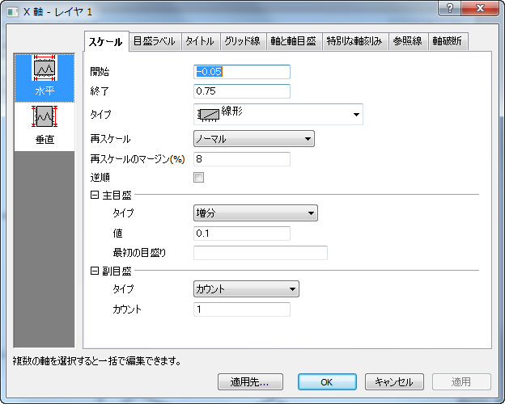
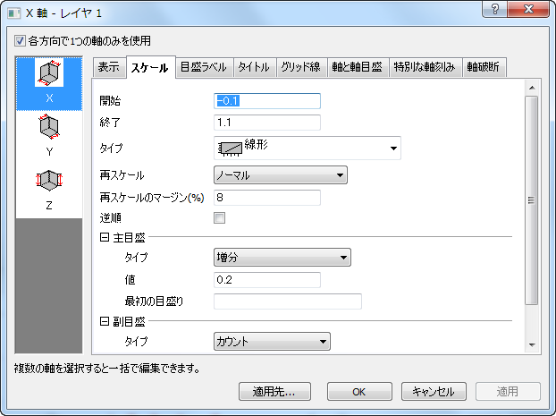

軸ダイアログは、ほとんどの2D/3Dグラフの軸を編集するために使用されるタブベースのダイアログです。
ダイアログには、8つのタブが用意されており(表示タブは3Dグラフまたはターナリー、参照線タブは2D軸のみ)、それぞれで異なる軸の属性を制御します。このダイアログを使用するにあったって、基本的には最初に左パネルでアイコンを選択します(複数選択可)。このアイコンは、編集を行う軸を示しています。そして、右パネルでタブを開き、軸の属性を編集します。
7つのタブに加え、適用先ボタンがあり、クリックするとダイアログボックスが開きます。このダイアログでは、一つの軸の設定を他の軸にも適用することができます。
また、3Dグラフの軸で使用できる、各方向で1つの軸のみを使用チェックボックスは、全体コントロールを行います。これが選択されていると(デフォルト設定)、3D OpenGLグラフで X-Y-Z の軸が1つ表示され、選択されていない場合は、各方向で追加の軸を表示し、合計で6つの軸：正面 - X, 背面 - X, 下 - Y, 上 - Y, 左 - Z, 右 - Zです。
|  |
| 2Dグラフの一般軸ダイアログ |
|  |
| 3Dグラフの一般軸ダイアログ |
| Note: Origin 9.0 より前の3Dグラフは、GDI(Windows Graphics Device Interface)を使用しています。Origin 9.0から、Originは、3Dグラフの表現にOpenGLを使用しています。しかし、OpenGL表現がオフのグラフ、たとえば古いOriginプロジェクトファイルや、OpenGLをサポートしていない形式のグラフで軸の編集を行う際は、以前のバージョンで使用していた複数タブの軸ダイアログボックスを使用します。 |
これらのタブでの設定の詳細は、この章のサブページで個別に紹介しています。
| このセクションで説明している項目 |